2021年国赛题 (1)
模块A
任务一:登录安全加固
1.密码策略(Windows,Linux)
a.最小密码长度不少于16个字符
windows:在本地安全策略–>账号策略–>密码策略–>密码长度最小值
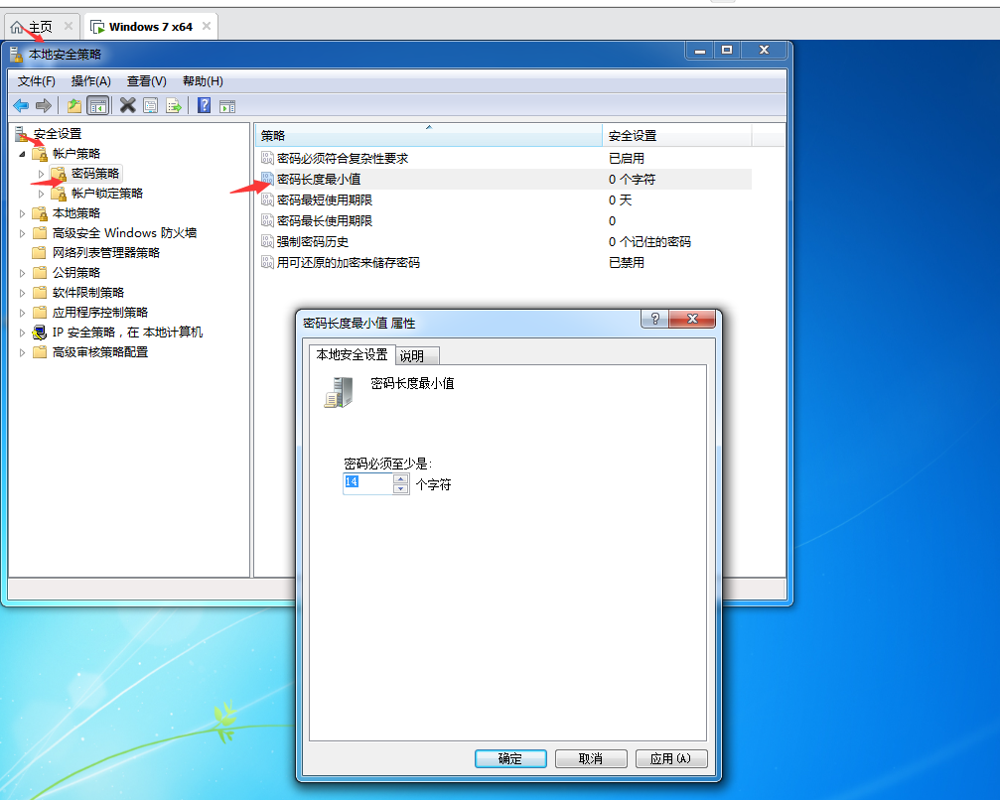
不知道为什么只能设置为14个字符
Linux:输入
vi /etc/login
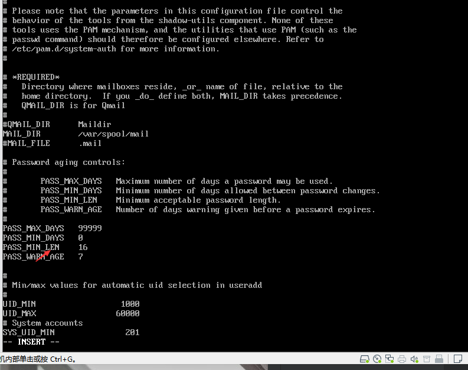
里面有
PASS_MAX_DAYS 99999 #最大时间
PASS_MIN_DAYS 0 #最小时间
PASS_MIN_LEN 16 #长度限制
点击Esc 输入: wq 进行保存
2.登录策略(Windows,Linux)
a.在用户登录系统时,应该用”For authorized users only” 提示信息;
Windows:
本地安全策略–>本地策略–>安全选项–>交互式登录:试图登录的用户的消息标题
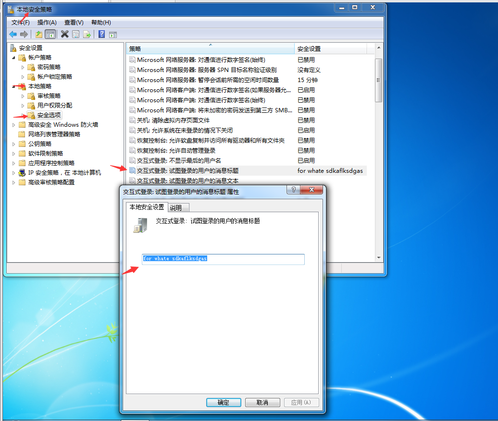
Linux:
vi /etc/issue
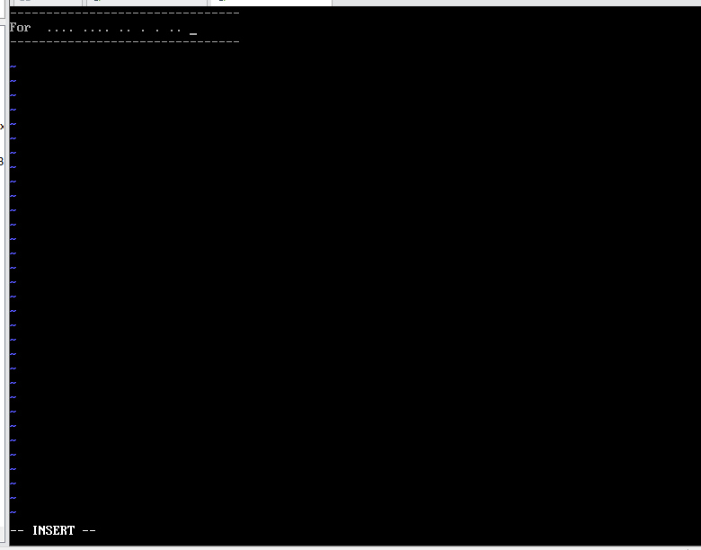
ssh连接的话 也有一个登录页面，感觉这题的话不会用到,了解一下就可以
输入
vi /etc/ssh/sshd_config
在最小面输入
Banner /etc/ssh/Banner
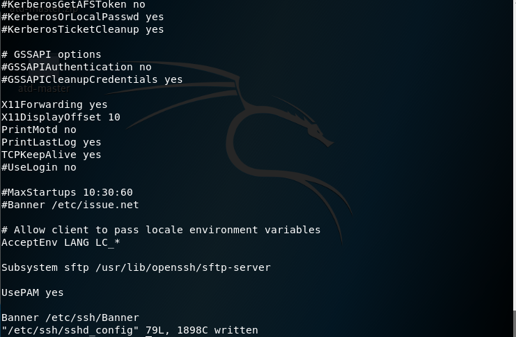
vi /etc/ssh/Banner
在Banner里面输入For authorized …….
按Ees
：wq进行保存
重新启动一下ssh服务
service sshd restart
再进行ssh远程连接
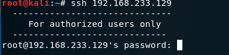
b.远程用户非活动会后连接超时应小于等于5分钟
Windows:
管理工具–>远程桌面会话主机配置–>RDP-Tcp–>属性–>会话–>改写用户设置–>空闲会话限制5分钟
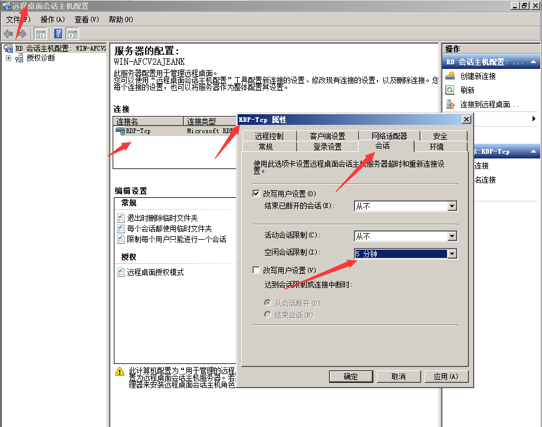
Linux:
vi /etc/ssh/sshd_config
修改下面的文件记得去掉#
ClientAliveInterval 300 300为秒
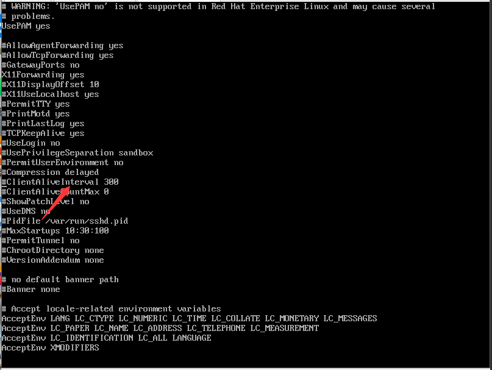
3.用户安全管理 (Windows)
a.设置user1用户只能在上班时间（周一至周五的9:00~18:00）可以登录，将user1的登录时间配置界面截图；
输入
net user “user1” /time:M-F,9:00-18:00
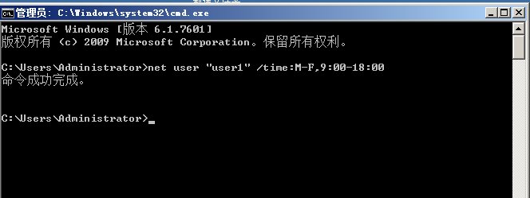
b.在组策略中只允许管理员账号从网络访问本机。
本地安全策略–>windows设置–>安全设置–>本地策略–>用户权限分配–>拒绝从网络访问这台计算机
除了管理员其他用户全部禁用
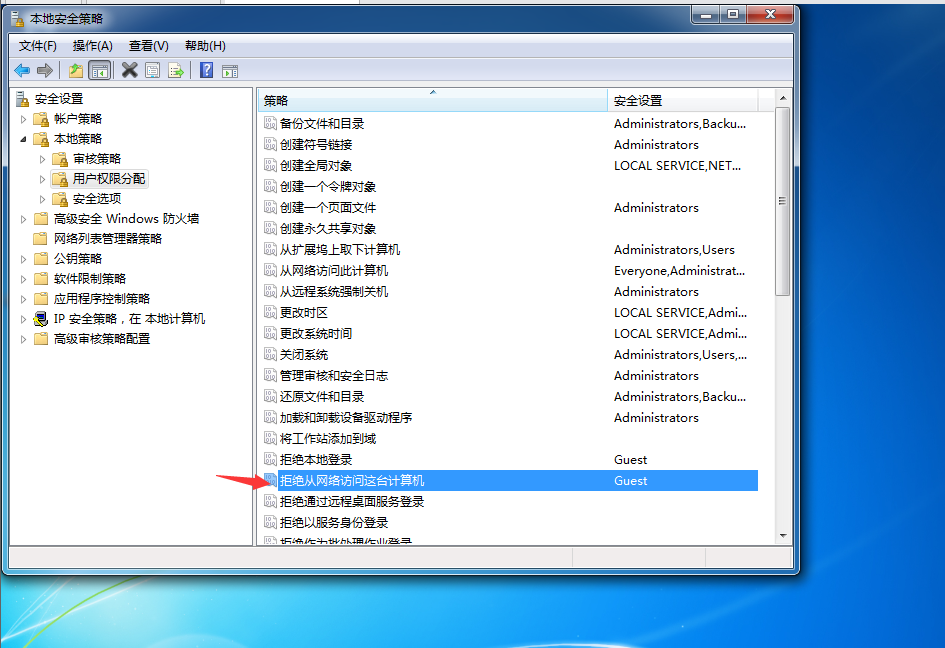
任务二:数据库加固(Linux)
4.以普通帐户mysql安全运行mysql服务，禁止mysql以管理员帐号权限运行；
vi /etc/my.cnf
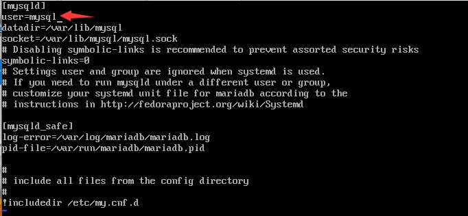
5.删除默认数据库(test)；
自己的mysql数据库的密码给忘记了,换了一下靶机,来进行做题,答案都一样
输入
drop database test;
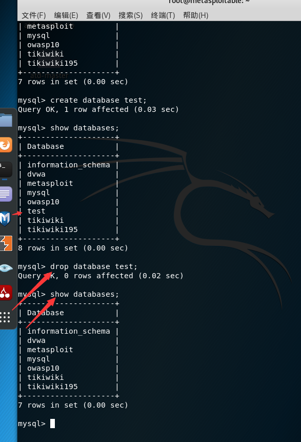
6.改变默认mysql管理员用户为:SuperRoot；
update user set user=’SuperRoot’ where user=’root’;
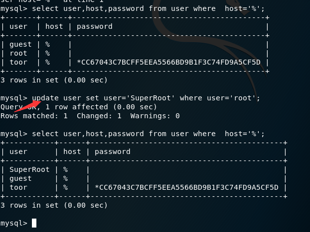
7.使用mysql内置MD5加密函数加密用户user1的密码为(P@ssw0rd1!)；
update user set password=md5(“P@ssw0rd1!”) where user=’user1’;
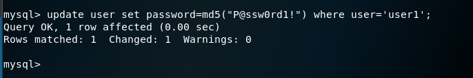
8.赋予user1用户对数据库所有表只有select,insert,delete,update权限。
grant select,insert,delete,update on tesedb.* to user1@’%’;
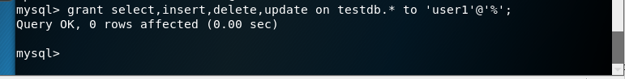
show grants for ‘user’@’%’;
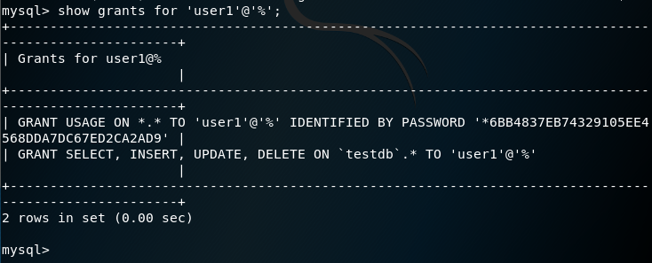
任务三 :流量完整性保护(Windows)
9.对Web网站进行HTTP重定向HTTPS设置，仅使用HTTPS协议访问网站（Windows）(注：证书颁发给test.com 并通过https://www.test.com访问Web网站)
点击运行–>gpedit.msc–>计算机配置–>管理模板–>Windows组件–>远程桌面服务–>远程桌面会话主机–>安全，
启用设置客户端连接加密级别、要求安全的RPC通信、远程（RDP）连接要求使用指定的安全层,设置设置客户端连接加密级别的加密级别为高级别、远程（RDP）连接要求使用指定的安全层的安全层为SSL
把我启用的启用上来了就可以了
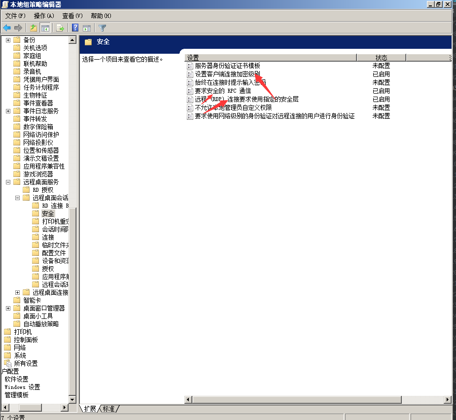
任务四:事件监控(Windows)
10.将Web服务器开启审核策略
登录事件 成功/失败；
特权使用 成功；
策略更改 成功/失败；
进程跟踪 成功/失败；
运行–secpol.msc–>本地策略–>审核策略
审核策略更改:成功,失败
审核登录事件:成功,失败
审核进程跟踪:成功,失败
审核特权使用:成功
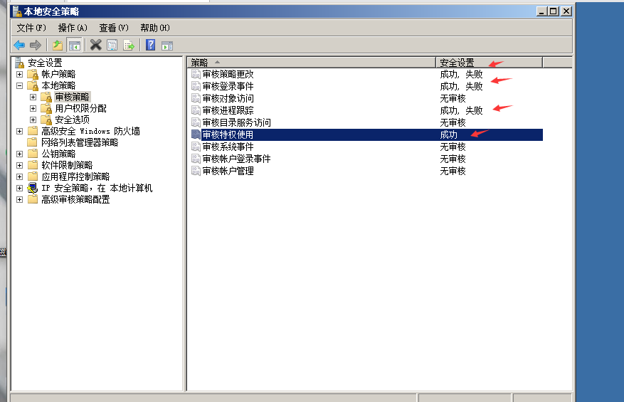
任务五:服务加固SSH\VSFTPD\IIS (Windows,Linux)
11.SSH服务加固（Linux）
a.修改ssh服务端口为2222；
vi /etc/ssh/sshd_config
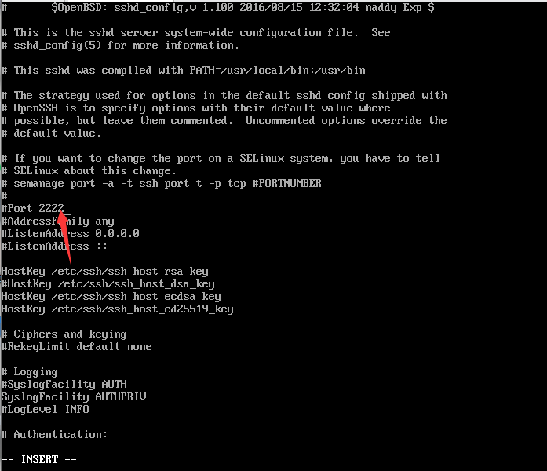
b.ssh禁止root用户远程登录。
PremitRootLogin yes 修改为no
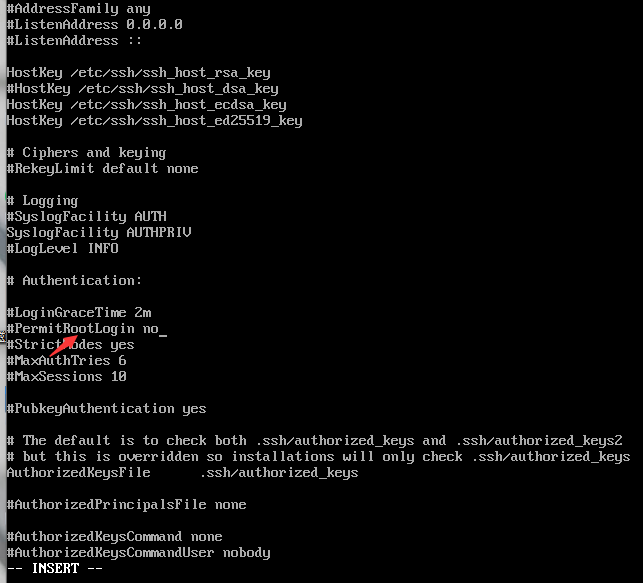
12.VSFTPD服务加固（Linux）
a.vsftpd禁止匿名用户上传；
vi /etc/vsftpd/vsftpd.conf
anon_upload_enable=YES 修改为NO
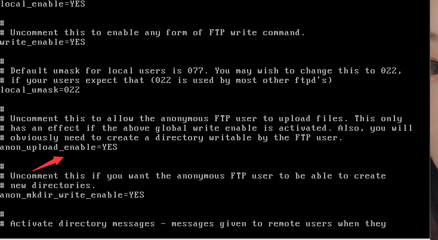
b.设置无任何操作的超时时间为5分钟。
idle_session_timeout=300 注意去掉#
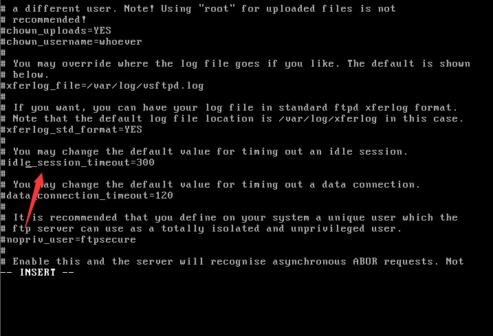
13.IIS加固（Windows）
a.开启IIS的日志审计记录(日志文件保存格式为W3C,只记录日期、时间、客户端IP地址、用户名、方法)；
iis中–>网站–>日志设置–>选择日志记录字段
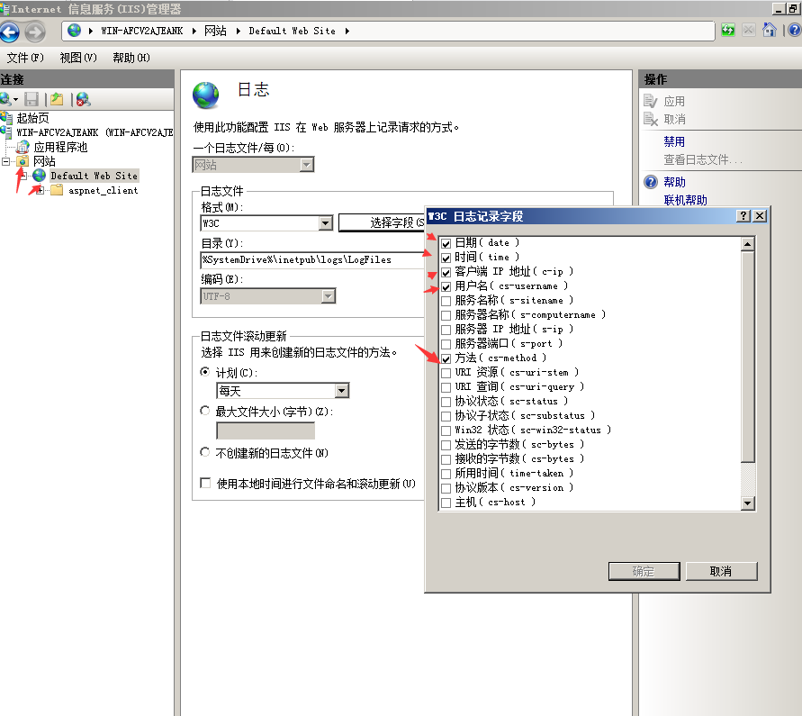
b.为了减轻网站负载，设置网站最大并发连接数为1000。
接着上面的点击属性–
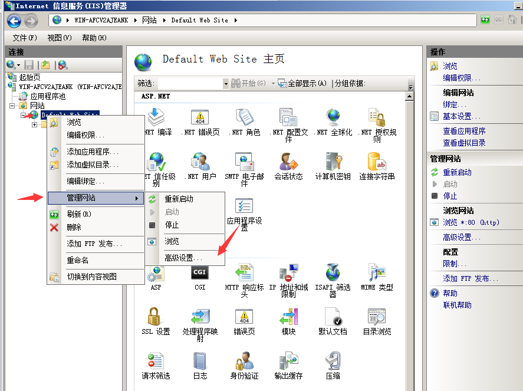
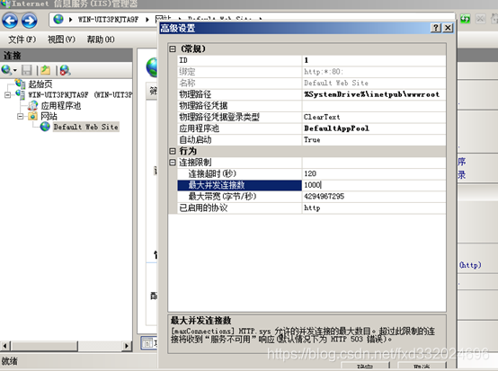
任务六:防火墙策略 (Windows,Linux)
所有服务器开启防火墙,为防止勒索病毒攻击对防火墙进行加固策略：
14.Windows系统禁用445端口；
高级安全Windows防火墙–>新建规则–>规则类型设置端口–>协议和端口设置tcp和445或者23–>操作设置阻止连接–>
配置文件设置所有–>名称445和23端口
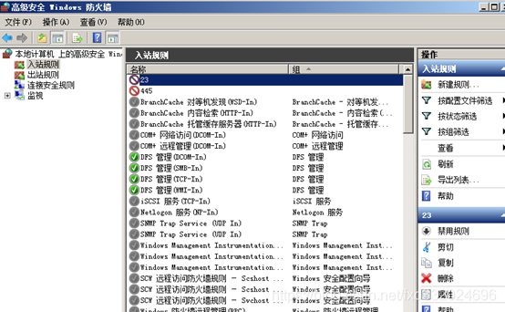
15.Windows系统禁用23端口；
上面的一样,包括了
16.Linux系统禁用23端口；
iptables -A INPUT -p 23 -j DROP
iptables -A OUTPUT -p 23 -j DROP
17.Linux系统禁止别人ping通；
使用防火墙禁止
iptables -A INPUT -p icmp –icmp-type 8 -s 0/0 -j DROP
18.为确保安全Linux系统禁止所有人通过ssh连接除了172.16.1.1这个ip。
iptables -A INPUT -s 172.16.1.1 -p tcp –dport 22 -j ACCEPT
2021年国赛题 (2)
任务一:登录安全加固
1.密码策略（Windows）
a.密码必须符合复杂性要求；
本地安全策略–>密码策略–>密码必须符合复杂性要求
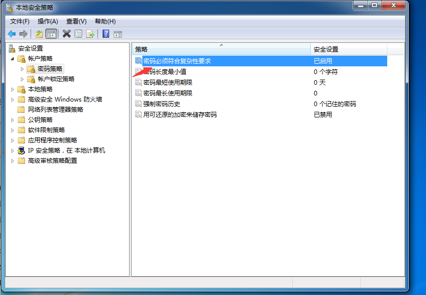
b.密码最短使用期限为10天。
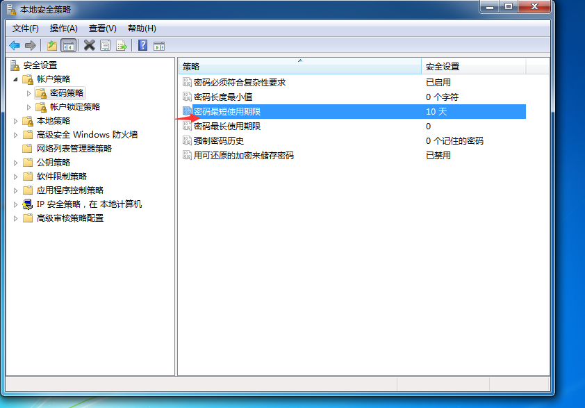
3.用户安全管理(Windows)
a.设置取得文件或其他对象的所有权，将该权限只指派给administrators组；
自己理解的是,在一个文件点击属性,设置权限给administrator组
b.禁止普通用户使用命令提示符;
gpedit.msc–>管理模板–>系统–>阻止访问命令提示符
我的windows没有,可以去百度一下,可以找到的
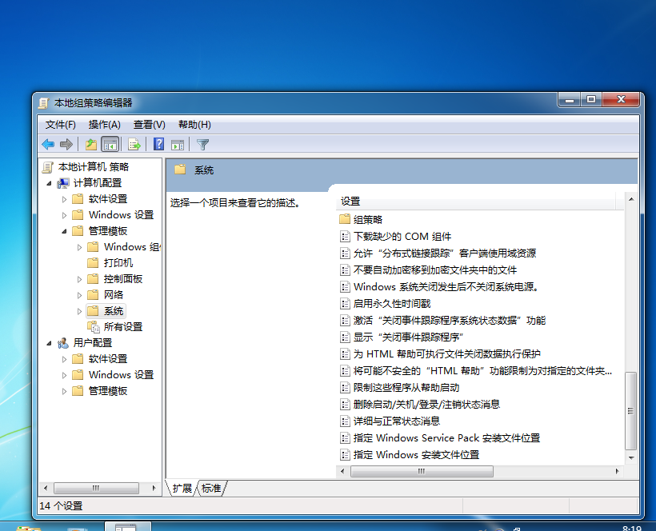
c.设置不显示上次登录的用户名。
在 本地策略组中选择windows设置–>安全设置–>本地策略–>安全选项–>交互式登录:不显示最后的用户名
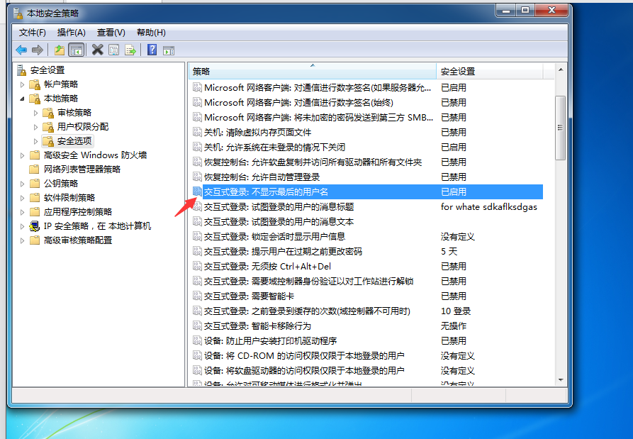
这里也不知道为什么没有这个,这个也可以百度,可以找到
任务二:本地安全策略设置 (Windows)
4.要求登录时不显示用户名；
在本地安全策略中–>安全设置–>本地策略–>安全选项–>交互式登录:不显示最后的用户名
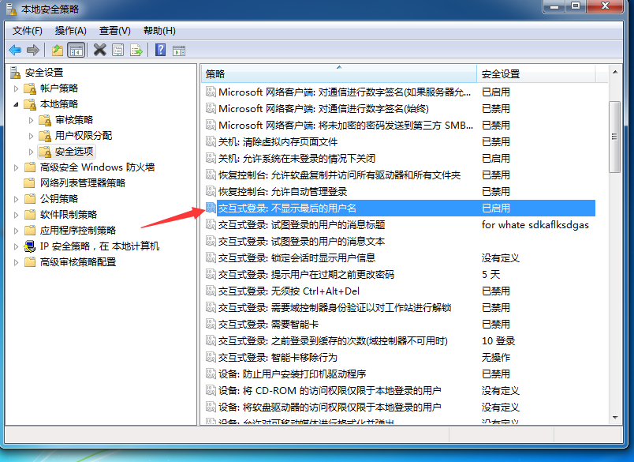
5.在密码过期的前5天开始提示用户在过期之前更改密码；
接这上面的
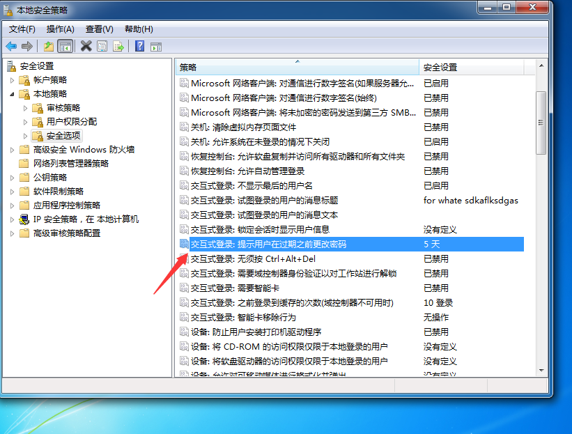
6.要求任何用户在登录到Windows前都必须按CTRL+ALT+DEL；
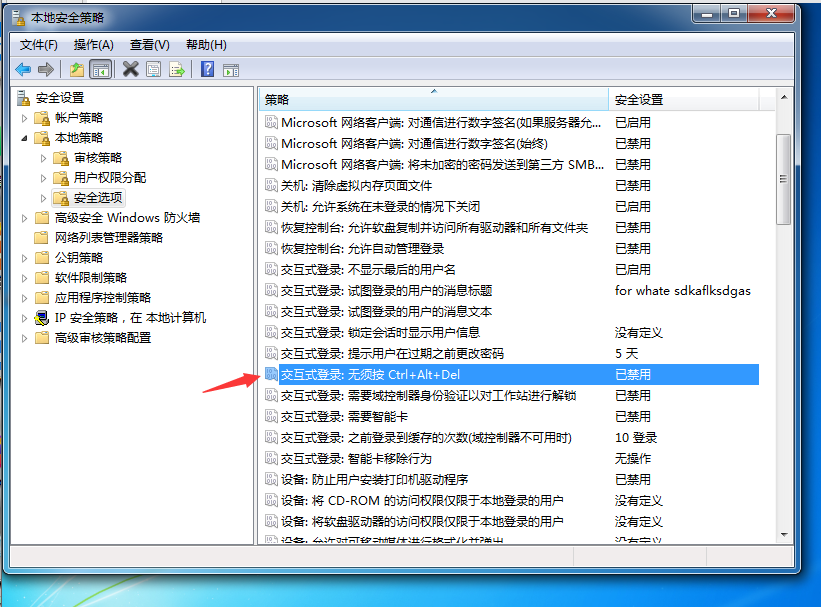
7.禁止SAM 帐户和共享的匿名枚举；
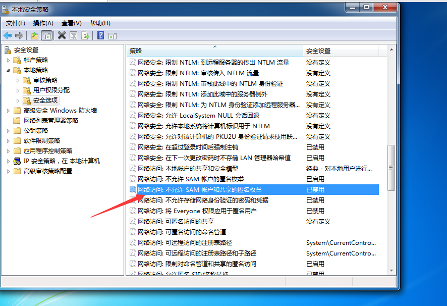
8.禁用来宾帐户。
进入计算机管理–>本地用户和组–>用户–>找到宾账户进行禁用
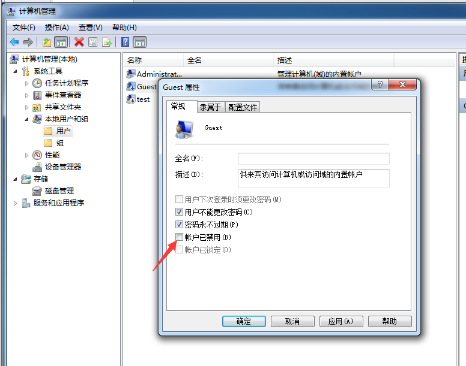
任务三:流量完整性保护 (Linux)
9.使用openssl申请证书，创建自签名证书server.crt和私钥server.key，要求只允许使用域名通过SSL加密访问。
不会
任务四:事件监控 (Windows)
10.安全日志文件大小至少为128MB，设置当达到最大的日志大小上限时，覆盖早于30天的日志
事件查看器–>windows日志–>安全–>点击属性 进行修改
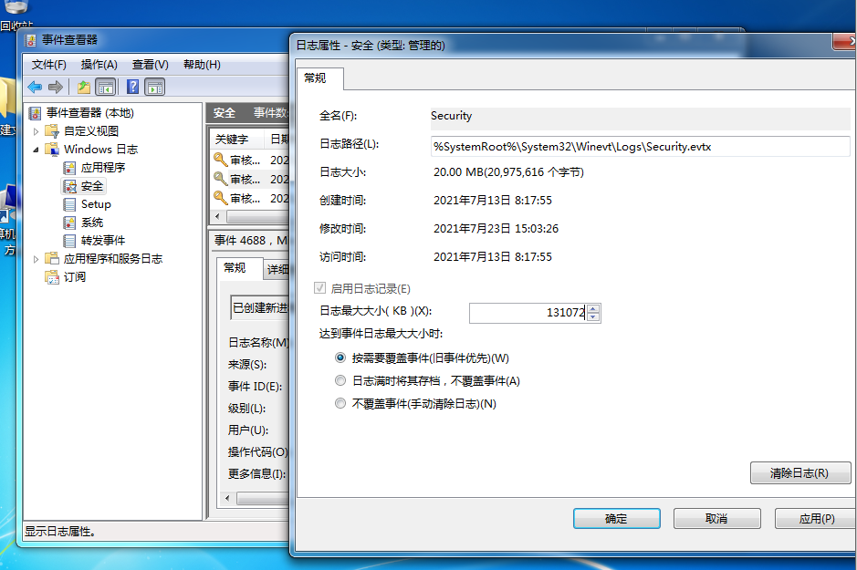
任务五:服务加固 SSHD\VSFTPD\IIS (Windows,Linux)
11.SSH服务加固（Linux）
a.修改ssh服务端口为2222；
上面有
b.ssh禁止ROOT用户远程登录。
上面有
12.VSFTPD服务加固（Linux）
a.用户访问的最大传输速率为1M；
vi /etc/vsftpd/vsftpd
Local_max_rate=1024
b.同一客户机IP地址允许最大客户端连接数10。
vi /etc/vsftpd/vsftpd.conf
Max_per_ip=0
13.IIS加固（Windows）
a.开启IIS的日志审计记录(日志文件保存格式为W3C,只记录日期、时间、客户端IP地址、用户名、方法)；
上面有
b.关闭IIS的WebDAV功能增强网站的安全性。
进入iis管理器–>有一个WIN-AFCV2AJEANK主页–>IIS部分有一个ISAPL和CGL限制 里面有一个webdbav的选项右键选择拒绝
我win里面没有,可以去百度看看,百度有
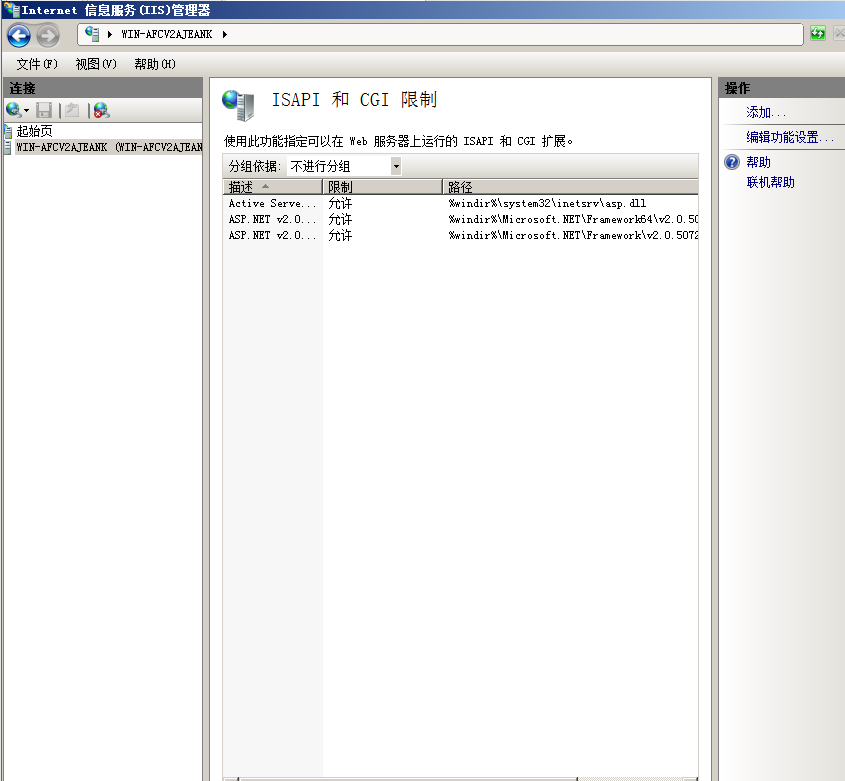
任务六:防火墙策略 (Linux)
14:为防止Nmap扫描软件探测到关键信息，设置iptables防火墙策略对3306号端口进行流量处理；
iptables -A INPUT -p tcp –dport 3306 -j DROP
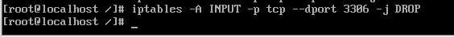
15:为防止SSH服务被暴力枚举，设置iptables防火墙策略仅允许172.16.10.0/24网段内的主机通过SSH连接本机；
iptables -A INPUT -s 172.16.10.0/24 -p tcp –dport 22 -j ACCEPT
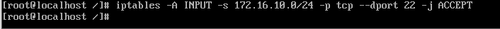
16:为防御IP碎片攻击，设置iptables防火墙策略限制IP碎片的数量，仅允许每秒处理1000个；
iptables -A FORWARD -f -m limit –limit 1000/s –limit-burst 1000 -j ACCEPT
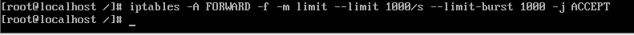
17:允许本机开放从TCP端口20-1024提供的应用服务;
iptables -A INPUT -p tcp –dport 20:1024 -j ACCEPT
iptables -A OUTPUT -p tcp –sport 20:1024 -j ACCEPT
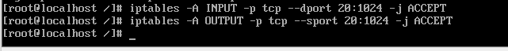
18:限制本机的Web服务在周一不允许访问。
iptables -A INPUT -d web服务的ip地址 -p tcp –dport 80 -m time